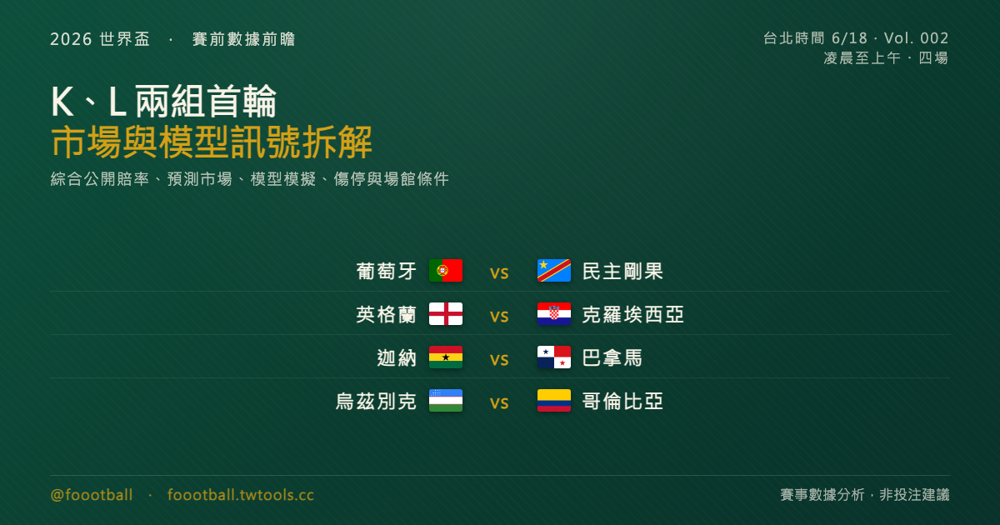

C 羅追平梅西、英格蘭撞上克羅埃西亞：K、L 兩組首輪賽前數據前瞻
台北時間 6/18 凌晨到上午，K、L 兩組首輪四場接力登場。葡萄牙對剛果民主共和國，C 羅若登場，將出戰生涯第 6 屆世界盃、追平梅西昨夜剛立下的紀錄；英格蘭對克羅埃西亞，是 2018 年世界盃準決賽的正面重演；迦納對巴拿馬是 L 組爭奪出線的關鍵卡位戰；烏茲別克則帶著世界盃處女秀，走進墨西哥城的高海拔考驗對哥倫比亞。這篇綜合公開賠率、預測市場、模型模擬、傷停、近況、歷史交手與場館條件，客觀拆解四場的賽前訊號與看點。本文為賽事數據分析，非投注建議。

2026 世界盃賽前數據前瞻 Vol. 002
⚠️ 閱讀說明：本文為賽事數據分析，引用公開賠率與預測市場資料作為「市場預期」的客觀參考（如同財經報導引用大盤指數），非投注建議，亦不提供任何投注管道。所有賠率／勝率為發稿當下快照、開賽前會變動；先發名單多在開賽前約 1 小時才公布，文中陣容為預測。
Medium／Substack 貼稿指南 1. 標題用 H1（上方主標） 2. 文章開頭插入
cover.png3. §1 總覽表可直接貼 markdown 表格 4. §2–§6 純文字直接 copy-paste 5. 末尾貼 tags（此區塊與圖片標記僅供跨平台貼稿，自家站 build 會自動移除。此文型建議自家站優先，跨平台視各站內容政策斟酌。）
§1 今夜總覽：四場一次看
台北時間 6/18 凌晨 01:00 起，每隔三小時一場，到上午連打四場。下表的「勝率區間」綜合公開賠率、預測市場與模型模擬，不代表單一市場價格，也不是結果預測：
| 賽事（組別） | 台北時間 | 場館 | 市場／模型勝率區間（主勝／和／客勝） | 一句話看點 |
|---|---|---|---|---|
| 🇵🇹 葡萄牙 — 🇨🇩 剛果民主共和國（K） | 01:00 | 休士頓 NRG Stadium | 約 70%+ ／ 18% ／ 9% | C 羅出戰第 6 屆世界盃、追平梅西紀錄；剛果是 1974 年以來首度回歸 |
| 🏴 英格蘭 — 🇭🇷 克羅埃西亞（L） | 04:00 | 阿靈頓 AT&T Stadium | 約 57% ／ 27% ／ 21% | 2018 世界盃準決賽重演；英格蘭資格賽 8 戰全勝、一球未失 |
| 🇬🇭 迦納 — 🇵🇦 巴拿馬（L） | 07:00 | 多倫多 BMO Field | 約 45% ／ 28% ／ 29% | 四場中最接近的一場，是 L 組爭出線的關鍵卡位 |
| 🇺🇿 烏茲別克 — 🇨🇴 哥倫比亞（K） | 10:00 | 墨西哥城（Mexico City Stadium・高海拔） | 約 15% ／ 25% ／ 60% | 烏茲別克世界盃處女秀，撞上墨西哥城逾 2,200 公尺海拔 |
一個共同訊號值得先點出來：除了葡萄牙那場市場明顯傾斜、且看好進球數偏多之外，其餘三場的賽前訊號都偏向「強隊小勝、比分不會太開」。以下逐場拆解。
§2 葡萄牙 vs 剛果民主共和國（K 組）🇵🇹
市場與模型：葡萄牙是今夜傾斜度最高的一方，讓盤與預測市場給出的主勝機率約落在七成以上（葡萄牙主勝 ≈ 70%+、和局 ≈ 18%、剛果爆冷 ≈ 9%）。進球數方面，市場傾向「進球偏多」。葡萄牙的優勢不只在 C 羅：中場有 B·費爾南德斯（Bruno Fernandes）、Vitinha、João Neves 等人的創造力，整體陣容深度也明顯高於對手。真正的課題反而是，面對低位密集防守時，主帥馬丁尼茲（Roberto Martínez）如何在「給 C 羅禁區存在感」與「維持前場流動」之間取得平衡。
最大看點：C 羅的第 6 屆世界盃。 昨夜梅西才成為史上首位出戰 6 屆世界盃的球員；今晚，只要 C 羅在這場揭幕戰登場，他就會追平這個門檻——兩人都自 2006 年首度參賽、一路走到 2026，成為史上僅有的兩位「6 屆世界盃」球員。一個剛立下紀錄，一個隔夜追平，兩位同時代的傳奇，再一次把彼此的名字並列在一起。（補充一個常被混淆的點：C 羅早在 2022 年就已是「史上首位在 5 屆不同世界盃都進球」的球員，那是另一條紀錄線。）
對手剛果民主共和國：這是他們自 1974 年（當年以「薩伊」之名參賽）以來、睽違半世紀的世界盃回歸。他們在非洲區資格賽以小組次名晉級附加賽階段，途中扳倒過喀麥隆、奈及利亞等勁旅，最後靠跨洲附加賽 1-0 擊敗牙買加才搶下這張門票——對這個國家是一整個世代的等待。葡萄牙世界排名高居第 5，實力與資源都遠在對手之上；預料剛果會擺出低位密集防守，把希望寄託在反擊與定位球。對葡萄牙而言，真正的問題不是能不能贏，而是能不能早早打開一支擺明擺大巴的球隊——這也是為什麼市場把這場的進球數預期拉得偏高。
§3 英格蘭 vs 克羅埃西亞（L 組）🏴🇭🇷
市場與模型：今夜的招牌大戰。英格蘭是被看好的一方、但並非壓倒性——主勝機率約 57%、和局約 27%、克羅埃西亞約 21%；多數分析傾向「英格蘭小勝、比分不開（Under 2.5 球）」的控制型劇本。
最大看點：2018 的重演。 這兩隊上一次在世界盃相遇，正是 2018 年的準決賽——克羅埃西亞在加時 2-1 逆轉英格蘭（曼朱基奇 109 分鐘絕殺），把英格蘭擋在決賽門外，自己則首度殺進世界盃決賽。八年後在阿靈頓重逢，劇情有了微妙的反轉：英格蘭這次以資格賽 8 戰全勝、一球未失的完美戰績前來，主帥圖赫爾（Tuchel）手上是一支正值當打的隊伍；而克羅埃西亞的黃金一代正在老去，但並非沒有戰力：靈魂人物莫德里奇仍是節奏核心，科瓦契奇（Kovačić）、佩里西奇（Perišić）等老面孔只要維持身體狀態，仍足以讓英格蘭付出代價。真正的疑問不是「有沒有人可用」，而是這批老將能否在高強度比賽裡撐滿 90 分鐘。
數據對照：英格蘭世界排名第 4，資格賽 8 戰全勝、攻 22 球且一球未失，是所有球隊裡最乾淨的一份成績單；克羅埃西亞則是 7 勝 1 和、攻 26 球失 4 球，火力同樣不俗，但後防不像英格蘭那樣滴水不漏。
傷停：英格蘭方面，利夫拉門托（Livramento）確定因傷無緣本屆，萊斯（Rice）、薩卡（Saka）的狀態賽前仍待觀察。克羅埃西亞方面賽前傷兵疑慮相對較少，但核心陣容年齡結構偏高，體能與比賽節奏的管理才是隱憂。一支零失球的上升期球隊，對上一支倚賴老將、年齡偏高的勁旅——這場的張力，不只在歷史恩怨，也在兩隊曲線的交叉點上。中場誰能掌控節奏（英格蘭的貝林漢一線 vs 克羅埃西亞的莫德里奇老將群），會是勝負的關鍵變數。
§4 迦納 vs 巴拿馬（L 組）🇬🇭🇵🇦
市場與模型：這是今夜四場裡最接近的一場。迦納僅是小幅領先——主勝機率約 45%、和局約 28%、巴拿馬約 29%，三種結果的機率相當接近。考量巴拿馬以防守見長、火力有限，市場對進球數的預期偏保守。
為什麼這場最關鍵：L 組另外兩隊是英格蘭與克羅埃西亞，實力明顯在迦納與巴拿馬之上。也就是說，這兩隊的直接對話，很可能就是在爭奪「小組第三、力拚最佳第三名晉級」的現實目標——首輪先拿分的一方，等於在出線戰裡先站上有利位置。一場看似不起眼的開幕戰，對雙方的晉級算盤卻可能是決定性的。
陣容：迦納由名帥奎羅斯（Carlos Queiroz）執教、隊長喬丹·阿尤（Jordan Ayew）領軍，鋒線有伊納基·威廉斯（Iñaki Williams）、塞門尼奧（Semenyo）等英超班底；但中場大將庫杜斯（Kudus，傷）、迪庫（Djiku）缺陣，帕提（Partey）則因加拿大入境與法律程序問題無法出戰首戰、奎羅斯已明確表示要在沒有他的情況下應戰，攻防中軸的完整度因此打了折扣。巴拿馬則是史上第 2 度參賽（首度是 2018 年），資格賽一路不敗，主帥克里斯蒂安森（Christiansen）打造的這支球隊，防守紀律是他們最大的本錢。
§5 烏茲別克 vs 哥倫比亞（K 組）🇺🇿🇨🇴
市場與模型：哥倫比亞是明顯被看好的一方（主勝機率約六成、和局約 25%、烏茲別克爆冷約 15%）。哥倫比亞近期防守穩固，市場對這場的進球數預期同樣偏低。
最大看點：處女秀 vs 高海拔。 這是烏茲別克史上第一次踏上世界盃——對中亞足球是歷史性的一刻。但他們的對手，不只是哥倫比亞，還有墨西哥城超過 2,200 公尺的高海拔：稀薄的空氣會讓沒有適應的球隊在下半場明顯吃力。而哥倫比亞在這點上佔了便宜——他們長年在波哥大（海拔更高）等高地比賽、對高海拔環境更熟悉，賽前備戰也更容易針對海拔做調整。對一支處女秀球隊來說，要同時對抗對手的實力與環境的物理門檻，難度加倍。
陣容：哥倫比亞由 2014 年世界盃金靴、隊長詹姆斯·羅德里奎茲（James Rodríguez）領軍——這是他的第 3 屆世界盃，也是哥倫比亞隊史世界盃頭號射手；鋒線還有頂級邊路爆點路易斯·迪亞斯（Luis Díaz），主帥洛倫佐（Lorenzo）麾下陣容齊整。烏茲別克如今由 2006 年世界盃冠軍隊長、義大利名宿卡納瓦羅（Fabio Cannavaro）執教——他們以初登大舞台的姿態應戰，能守住多久、能不能製造驚奇，是這場的懸念，也讓這場處女秀多了一層話題性。
§6 一句話總表
| 賽事 | 賽前訊號一句話 |
|---|---|
| 🇵🇹 葡萄牙 — 🇨🇩 剛果民主共和國 | 葡萄牙大幅領先、看好多進球；真正的故事是 C 羅追平梅西的「6 屆世界盃」 |
| 🏴 英格蘭 — 🇭🇷 克羅埃西亞 | 2018 準決賽重演；英格蘭零失球上升期 vs 老去的黃金一代，市場看英格蘭小勝 |
| 🇬🇭 迦納 — 🇵🇦 巴拿馬 | 四場中最接近；L 組「爭第三」的關鍵卡位，巴拿馬防守是變數 |
| 🇺🇿 烏茲別克 — 🇨🇴 哥倫比亞 | 哥倫比亞被看好；烏茲別克處女秀還要對抗墨西哥城高海拔 |
整體而言，今夜的賽前訊號是「一場一面倒（葡萄牙）、一場招牌對決（英克）、一場勢均力敵（迦巴）、一場實力＋環境雙重門檻（烏哥）」。賽果如何，戰報見。
常見問題
Q：2026 世界盃 6/18（台北時間）凌晨到上午有哪些比賽？ A：K、L 兩組首輪四場——葡萄牙對剛果民主共和國（01:00）、英格蘭對克羅埃西亞（04:00）、迦納對巴拿馬（07:00）、烏茲別克對哥倫比亞（10:00），皆為台北時間。
Q：C 羅這場出戰，真的會追平梅西的紀錄嗎？ A：是的。只要 C 羅在這場登場，他就會和梅西並列為史上僅有的兩位「出戰 6 屆世界盃」的球員（兩人都自 2006 年參賽至 2026）。梅西在昨夜對阿爾及利亞的比賽中率先達成，C 羅今晚追平——是並列、不是超越。
Q：英格蘭與克羅埃西亞有什麼歷史恩怨？ A：兩隊上一次在世界盃相遇是 2018 年的準決賽，克羅埃西亞在加時 2-1 逆轉英格蘭、把英格蘭淘汰，自己挺進隊史首座世界盃決賽。這場是睽違 8 年的正面重演。
Q：為什麼說墨西哥城的場地對烏茲別克不利？ A：墨西哥城的球場海拔超過 2,200 公尺，空氣稀薄，沒有適應的球隊容易在下半場體力透支。哥倫比亞長年在高地比賽、也在高地備戰，相對佔有適應上的優勢。
Tags: 世界盃, 2026世界盃, C羅, 英格蘭, 賽事前瞻